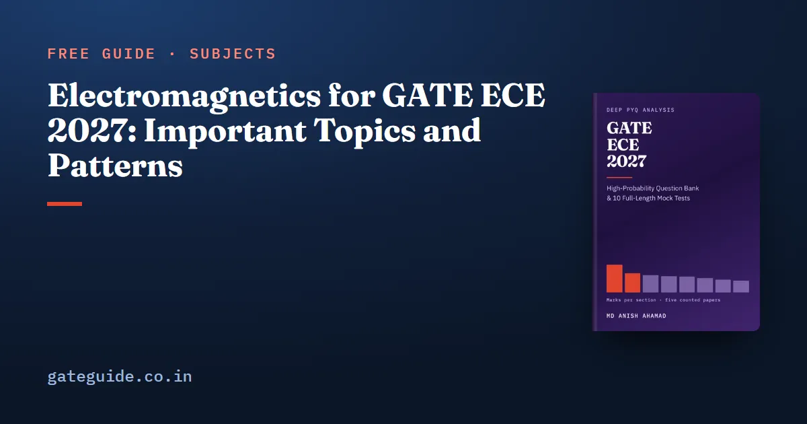

Electromagnetics for GATE ECE 2027: Important Topics and Patterns

Electromagnetics is the smallest technical section of the GATE EC paper and the one most often left for last. Counted question by question across five papers — 2010, 2019, 2020, 2025 and 2026 — it produced 25 questions and 37 marks, a mean of 7.4 a paper, and it never fell below 6 or rose above 9. It does not vanish, and its syllabus is small enough to finish.
In this guide
This guide sets out what those 37 marks were spent on, with the question numbers, what the 2027 syllabus did to the section (nothing, in content), and a preparation list built from the counted evidence rather than from the textbook's chapter order.
Key takeaways
- Counted marks by year: 7 (2010), 9 (2019), 8 (2020), 6 (2025), 7 (2026). Mean 7.4, from 5 questions a paper.
- The transmission-line cluster — lines, S-parameters and the Smith chart — appears in four of the five papers and carries 13 of the 37 marks.
- Every counted waveguide question is rectangular; every counted reflection problem is at normal incidence.
- Optical fibres, circular waveguides, oblique incidence and skin depth as a numerical item produced no counted question.
- The 2027 syllabus left this section unchanged in content. The 2025 and 2026 papers were set under the same wording that applies to 2027.
What the section is worth
| Paper | Organising institute | Questions | Marks | 1-mark | 2-mark | NAT |
|---|---|---|---|---|---|---|
| 2010 | IIT Guwahati | 5 | 7 | 3 | 2 | 0 |
| 2019 | IIT Madras (sets 2027) | 6 | 9 | 3 | 3 | 2 |
| 2020 | IIT Delhi | 5 | 8 | 2 | 3 | 3 |
| 2025 | IIT Roorkee | 3 | 6 | 0 | 3 | 2 |
| 2026 | IIT Guwahati | 6 | 7 | 5 | 1 | 2 |
| Five papers | 25 | 37 | 13 | 12 | 9 |
The marks barely move; the shape of the section moves a great deal. 2025 asked three two-mark questions and no one-mark question at all. 2026 asked six questions across six different subtopics, five of them for one mark each. A plan that goes deep on two topics suits the first shape and fails the second, so plan for breadth. The format split is 15 multiple-choice, 9 numerical-answer and 1 multiple-select, and that one multiple-select question, 2026 Q28 on a dielectric loss tangent, is the section's first. How this section compares with the other eight is in the GATE ECE subject-wise weightage guide.
A note on numbering: the book counts every paper from Q1 to Q65 straight through. The printed 2019 and 2020 papers restart at 1 after General Aptitude, so subtract 10 to find those questions in the PDF.
Where the 37 marks went
| Topic | Questions | Marks | Counted questions |
|---|---|---|---|
| Maxwell's equations, statics, | 5 | 8 | 2019 Q21, Q22, Q46; 2025 Q50, Q65 |
| Plane waves and properties | 5 | 7 | 2010 Q25, Q46; 2020 Q55; 2026 Q24, Q28 |
| Transmission lines | 4 | 6 | 2010 Q23, Q47; 2020 Q31; 2025 Q64 |
| Rectangular waveguides | 3 | 5 | 2019 Q47, Q61; 2026 Q33 |
| S-parameters | 3 | 4 | 2010 Q22; 2020 Q56; 2026 Q34 |
| Antennas | 3 | 4 | 2019 Q33; 2020 Q53; 2026 Q21 |
| Smith chart | 2 | 3 | 2020 Q23; 2026 Q52 |
Read the marks and the paper counts together, because they disagree. Maxwell's equations lead on marks but appear in only two papers: 2019 put three questions there and 2025 two, and the other three papers none. It is the high-variance topic. Plane waves, transmission lines, S-parameters and antennas each appear in three papers, in ones and twos. They are the reliable ones.
The patterns that recur
The rectangular-guide cutoff formula, read both ways. 2026 Q33 asks the cutoff forwards. 2019 Q61 runs it backwards, recovering the guide's aspect ratio from a ratio of two cutoffs. 2019 Q47 uses its consequence, the product of phase and group velocity equalling squared: .
One reflection coefficient, two settings. 2010 Q46 reflects a plane wave off a dielectric half-space; 2025 Q64 asks the power delivered to a mismatched complex load. The interface form, built from the two wave impedances, and the line form, built from the load and characteristic impedances, are the same expression.
The two-port power ledger. 2010 Q22 tests losslessness and reciprocity from a scattering matrix; 2026 Q34 asks the power a lossy two-port dissipates when . Sixteen years apart, the same identity, with equality only when nothing is lost:
The Smith chart without the chart. 2020 Q23 asks where purely reactive loads sit; 2026 Q52 asks what the diametrically opposite point on a constant- circle means. Neither needed a chart drawn. Both are three lines of algebra between and normalised impedance.
Impedance transformation down a line. 2020 Q31 asks the input impedance of a three-quarter-wave line with a resistive load; 2010 Q47 cascades sections with a shorted stub and asks a VSWR.
Several of these sit on a boundary. The S-parameter questions are close to Networks two-port work, 2026 Q21 (the Friis equation) is close to Communications, and 2025 Q50, a current in a copper wire from , could have been filed under Electronic Devices. A candidate strong in Networks picks up the S-parameter marks almost free.
What the 2027 syllabus changed
Nothing in content. Compared word for word with the 2026 PDF, the Maxwell's equations, plane waves and transmission lines paragraphs are identical. Electromagnetics and Digital Circuits are the only two sections the revision left alone. The one visible difference is that the 2027 PDF prints "Sparameters" where 2026 printed S-parameters: a dropped hyphen, not a new topic. The section-by-section comparison is in the GATE ECE 2027 syllabus changes guide; confirm the wording against the current official PDF.
That has a practical consequence. The 2025 and 2026 papers were written against exactly the text that governs 2027, so their evidence transfers without adjustment. Together they gave 9 questions and 13 marks, tilted towards transmission lines, S-parameters, the Smith chart, waveguide cutoff and lossy-medium parameters.
What has never been asked
Across 25 counted questions, none touches optical fibres (numerical aperture, acceptance angle, V-number), circular waveguides, oblique incidence with Snell's law or the Brewster angle, skin depth as its own numerical item, the wave equation as a derivation, monopole antennas, or N-element array design. The nearest approaches are 2026 Q28, a loss-tangent question one step short of skin depth, and 2020 Q53, which reaches a two-element array through image theory. Five papers is a small sample, so read this as the lowest priority rather than a promise.
The IIT Madras paper
2019, the one counted paper IIT Madras set, was the heaviest Electromagnetics paper of the five at 9 marks. Three of its six questions came from the Maxwell's equations paragraph (Q21 Gauss's law, Q22 matching the equations, Q46 Ampère's law with superposition) and two from waveguides. It asked nothing on transmission lines, S-parameters or the Smith chart, and its antenna question, Q33, asked how much a short dipole's radiation resistance changes for a 1 per cent change in length rather than the value itself.
One paper is a signal, not a law. The book's reading, labelled as a prediction: expect at least one integral-form Maxwell application and one rectangular-waveguide question, and be ready for a percentage-change framing. Do not read 2019's silence on transmission lines as a forecast; four of five papers asked that cluster, including both recent ones.
How to prepare it
Six formula groups, in this order:
- Rectangular-waveguide cutoff — the cutoff formula, the dominant mode, phase and group velocity, guide wavelength, and the aspect-ratio inversion.
- Reflection and everything downstream — at a line load and at a dielectric interface, VSWR, power delivered, and input impedance for quarter-wave and half-wave lines.
- Maxwell's equations in integral form — Gauss, Ampère and Faraday on simple geometries, plus and the conduction–displacement comparison.
- Plane-wave properties — intrinsic impedance, the missing field component from transversality, polarisation and handedness, loss tangent and the good-conductor test, time-average Poynting power.
- S-parameters and the Smith chart — reciprocity and losslessness tests, the power ledger, the -to-impedance mapping.
- Antennas — the Friis equation and short-dipole radiation resistance, which scales with the square of length over wavelength, , so a 1 per cent length change moves it by about 2 per cent.
Most lost marks here are a factor of two or a square root: , not ; the half in the time-average Poynting vector; the square in the radiation-resistance law. For where Electromagnetics sits in the whole paper, the GATE ECE important topics guide ranks all nine sections. The ECE book carries 25 Electromagnetics questions written for it with worked solutions, sized and mixed to the counted evidence.
Frequently asked questions
How many marks is Electromagnetics in GATE ECE?
Counted question by question across the five papers used for this analysis, Electromagnetics took 7, 9, 8, 6 and 7 marks in 2010, 2019, 2020, 2025 and 2026. That is 25 questions and 37 marks, a mean of 7.4 marks a paper. It is the smallest technical section by mean, but it never fell below 6 marks in any counted year.
Can I skip Electromagnetics for GATE ECE 2027?
The counted evidence argues against it. The section has delivered between 6 and 9 marks in every counted paper, and 2019, the one counted paper set by IIT Madras, gave it 9, the highest of the five. Most of those marks come from a short list of formulas that can be learned in a few focused days.
Did the GATE 2027 syllabus change Electromagnetics?
No, not in content. Compared word for word with the 2026 syllabus, the section is the same apart from the 2027 PDF printing S-parameters without its hyphen, which is a typesetting slip rather than a new topic. Confirm the current wording against the official GATE 2027 EC syllabus PDF, since it can be revised.
Which Electromagnetics topics have never been asked in GATE ECE?
In the five counted papers there is no question on optical fibres, circular waveguides, oblique incidence or the Brewster angle, skin depth as a numerical item, or the design of an N-element antenna array. Every counted waveguide question is rectangular, and every counted reflection problem is at normal incidence.
Are Electromagnetics questions in GATE ECE numerical?
Largely. The counted papers asked 15 multiple-choice, 9 numerical-answer and 1 multiple-select question in this section, so 36 per cent of its questions had no options at all. Almost every numerical one asks for a single quantity from a single formula, such as a cutoff frequency, an input impedance or delivered power.
Sources
- GATE 2027 official website (IIT Madras)
- GATE 2027 EC syllabus PDF (IIT Madras)
- GATE 2026 EC syllabus PDF (IIT Guwahati)
- GATE 2026 EC question paper (IIT Guwahati)
- GATE 2026 EC answer key (IIT Guwahati)
- GATE 2025 EC question paper (IIT Roorkee)
- GATE 2020 EC question paper with answer key (IIT Delhi)
- GATE 2019 EC question paper with answer key (IIT Madras)
Dates, fees and the syllabus are set by the GATE 2027 organising institute and can change. Always confirm at gate2027.iitm.ac.in.